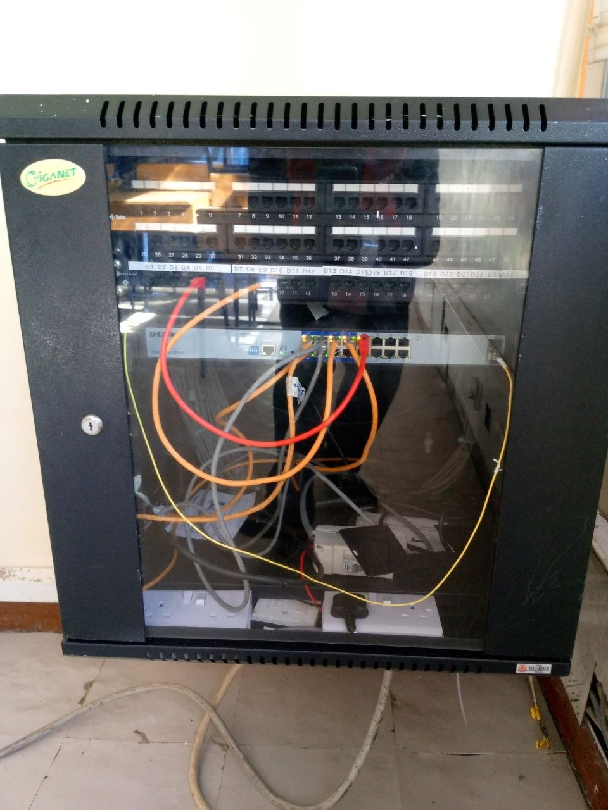
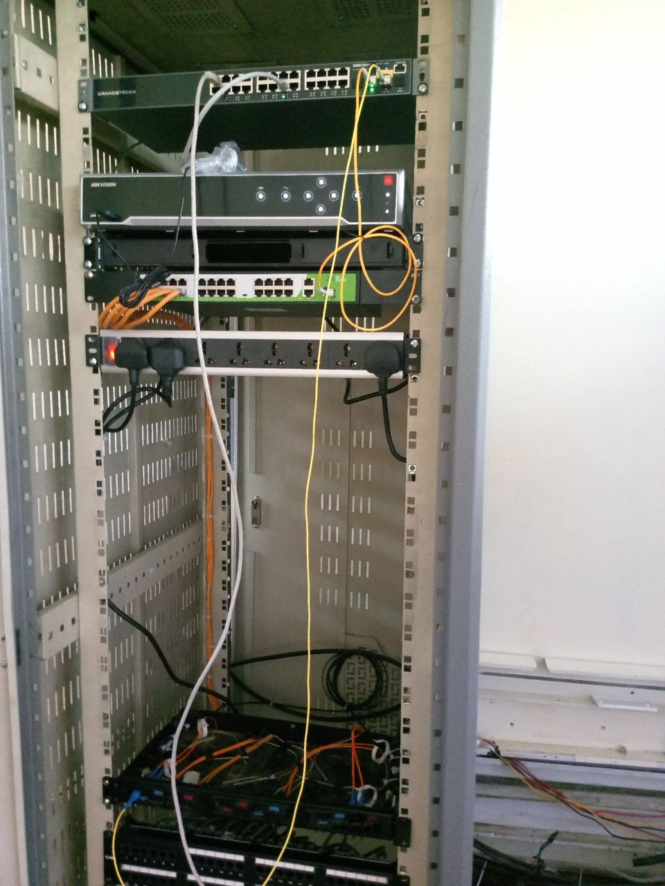
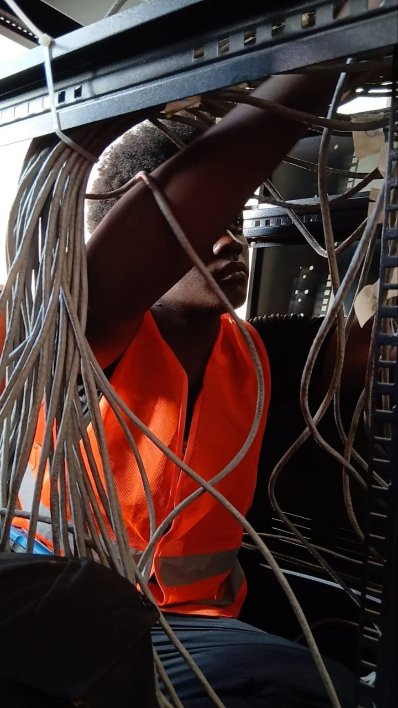

Field Projects & Case Studies

Enterprise Cable & Rack Management
Designed and executed clean cable routing, labeling, and switch deployment for a physical network overhauling project.

Enterprise Cable & Rack Management
Performed fiber optic cable testing, fault identification, and signal verification using Optical Power Meters (OPMs) to ensure reliable network connectivity.

CCTV Surveillance Deployment
Installed and integrated a secure IP camera system with custom DVR configurations, ensuring full-site coverage and predictable network traffic.

Working on cable management
Overhauling legacy network infrastructure. This project required tracing, labeling, and organizing over 100 unstructured drops into a clean, functioning enterprise rack.